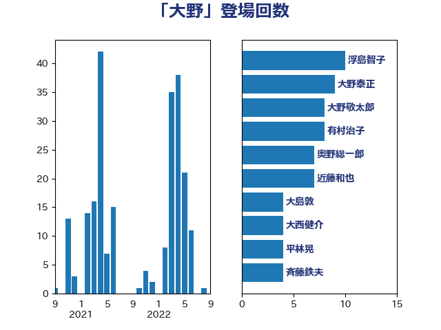

単語「大野」

| 浮島智子 | 公明党 | 10 回 |
| 大野泰正 | 自由民主党 | 9 回 |
| 大野敬太郎 | 自由民主党 | 8 回 |
| 有村治子 | 自由民主党 | 8 回 |
| 奥野総一郎 | 立憲民主党 | 7 回 |
| 近藤和也 | 立憲民主党 | 7 回 |
| 大島敦 | 立憲民主党 | 4 回 |
| 大西健介 | 立憲民主党 | 4 回 |
| 平林晃 | 公明党 | 4 回 |
| 斉藤鉄夫 | 公明党 | 4 回 |
| 舟山康江 | 国民民主党 | 4 回 |
| 若宮健嗣 | 自由民主党 | 4 回 |
| 藤岡隆雄 | 立憲民主党 | 4 回 |
| 足立敏之 | 自由民主党 | 4 回 |
| 佐々木さやか | 公明党 | 3 回 |
| 佐藤正久 | 自由民主党 | 3 回 |
| 國重徹 | 公明党 | 3 回 |
| 安江伸夫 | 公明党 | 3 回 |
| 小寺裕雄 | 自由民主党 | 3 回 |
| 小沢雅仁 | 立憲民主党 | 3 回 |
| 平口洋 | 自由民主党 | 3 回 |
| 松下新平 | 自由民主党 | 3 回 |
| 松村祥史 | 自由民主党 | 3 回 |
| 細田博之 | 自由民主党 | 3 回 |
| 赤羽一嘉 | 公明党 | 3 回 |
| 金子俊平 | 自由民主党 | 3 回 |
| 金田勝年 | 自由民主党 | 3 回 |
| 長浜博行 | 無所属 | 3 回 |
| 上野賢一郎 | 自由民主党 | 2 回 |
| 伊藤岳 | 日本共産党 | 2 回 |
| 宮本岳志 | 日本共産党 | 2 回 |
| 山東昭子 | 自由民主党 | 2 回 |
| 山田賢司 | 自由民主党 | 2 回 |
| 岩本剛人 | 自由民主党 | 2 回 |
| 手塚仁雄 | 立憲民主党 | 2 回 |
| 新妻秀規 | 公明党 | 2 回 |
| 村井英樹 | 自由民主党 | 2 回 |
| 海江田万里 | 立憲民主党 | 2 回 |
| 石井浩郎 | 自由民主党 | 2 回 |
| 福岡資麿 | 自由民主党 | 2 回 |
| 自見はなこ | 自由民主党 | 2 回 |
| 茂木敏充 | 自由民主党 | 2 回 |
| 藤田文武 | 日本維新の会 | 2 回 |
| 足立康史 | 日本維新の会 | 2 回 |
| 仁木博文 | 無所属 | 1 回 |
| 伊藤孝恵 | 国民民主党 | 1 回 |
| 和田政宗 | 自由民主党 | 1 回 |
| 室井邦彦 | 日本維新の会 | 1 回 |
| 小林鷹之 | 自由民主党 | 1 回 |
| 小里泰弘 | 自由民主党 | 1 回 |
| 岩谷良平 | 日本維新の会 | 1 回 |
| 岸信夫 | 自由民主党 | 1 回 |
| 志位和夫 | 日本共産党 | 1 回 |
| 柴山昌彦 | 自由民主党 | 1 回 |
| 森屋隆 | 立憲民主党 | 1 回 |
| 浅川義治 | 日本維新の会 | 1 回 |
| 浅野哲 | 国民民主党 | 1 回 |
| 田中英之 | 自由民主党 | 1 回 |
| 田村まみ | 国民民主党 | 1 回 |
| 田村貴昭 | 日本共産党 | 1 回 |
| 石原正敬 | 自由民主党 | 1 回 |
| 紙智子 | 日本共産党 | 1 回 |
| 羽田次郎 | 立憲民主党 | 1 回 |
| 西村康稔 | 自由民主党 | 1 回 |
| 赤嶺政賢 | 日本共産党 | 1 回 |
| 酒井庸行 | 自由民主党 | 1 回 |
| 青木一彦 | 自由民主党 | 1 回 |
| 青木愛 | 立憲民主党 | 1 回 |
| 高木かおり | 日本維新の会 | 1 回 |